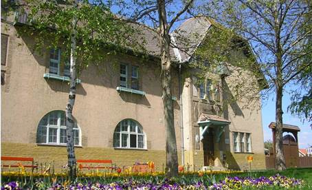
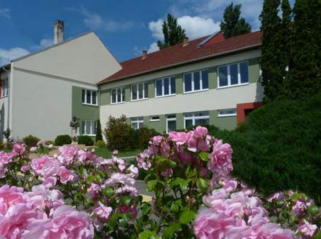

Zoltánfy István Iskola
Intézmény bemutatása
Szegedi Kossuth Lajos Általános Iskola Deszki Zoltánfy István Általános Iskolája
„Ha hajót akarsz építeni, ne hívj össze embereket, hogy tervrajzokat készítsenek, felosztják a munkát, fákat hoznak. Ehelyett tanítsd meg őket sóvárogni a végtelen tenger után." — Antoine de Saint-Exupéry
182
tanuló
2
épület
1 500 m²
iskolakert
Épületeink

Alsó tagozat
Deszk, Tempfli tér 1.
„Öreg iskola" — 1–4. évfolyam

Felső tagozat
6772 Deszk, Móra Ferenc utca 2.
5–8. évfolyam
Programjaink
- Aktív Iskola Program — testmozgás beépítve a mindennapokba
- Kölyök Atlétika — atlétikai alapok kisiskolás kortól
- Country Olimpia — sportversenyek közösségépítő erővel
- Boldogiskola, KEVE, Kék tér — jóllét és közösségi programok
Iskolakertünk
1 500 m²-es iskolakertünkben 60 gyümölcsfa és gyógynövények találhatók. A kert a környezeti nevelés élő terepe: tanulóink aktívan részt vesznek a gondozásban és a természetismereti foglalkozásokon.
Szakkörök és foglalkozások
Kínai nyelv
Angol nyelv
Szerb nyelv
Kórus
Kézműves
Természetismeret
Irodalom
Társastánc
Erzsébet-tábor
Partnerintézményeink
Deszki Faluház
SZTE Mérnöki Kar
Kereskedelmi és Iparkamara
Szegedi Konfuciusz Intézet
Igazgató
Kovács Attila — tagintézmény-igazgató
Telefon: 62/271-220 | E-mail: igazgato.zoltanfy@klai-szeged.hu
Fogadóóra: szerda 8:55–9:40
Telefon: 62/271-220 | E-mail: igazgato.zoltanfy@klai-szeged.hu
Fogadóóra: szerda 8:55–9:40